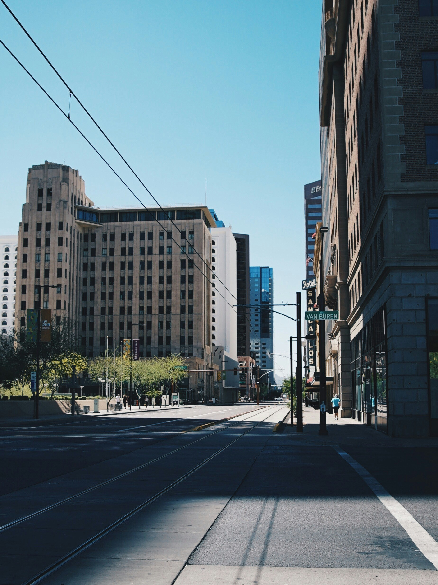
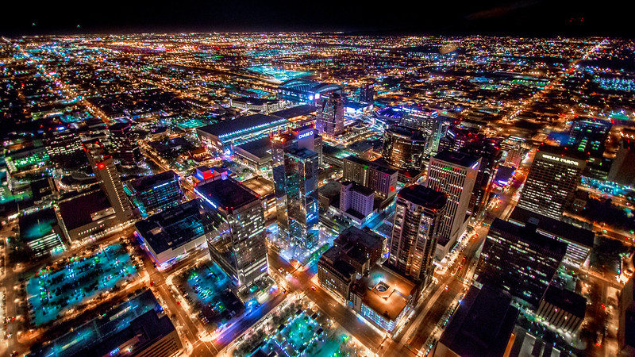

Phoenix, The Capital of Arizona

This image captures the historic charm of
Downtown Phoenix during the day. The streets are
lined with iconic buildings like the Hotel San Carlos, and the
city's unique architecture stands out under the bright blue sky.
It's a reminder of Phoenix's blend of modern development and rich
history.

At night, downtown Phoenix transforms into a glowing hub of
activity. This aerial view showcases the vibrant city lights,
illuminating the streets and skyscrapers. The sprawling urban
landscape of Phoenix is alive with energy, reflecting the city's
dynamic growth and modern appeal.